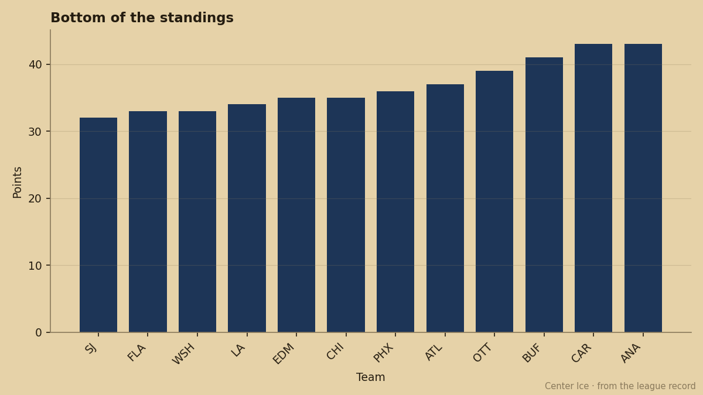
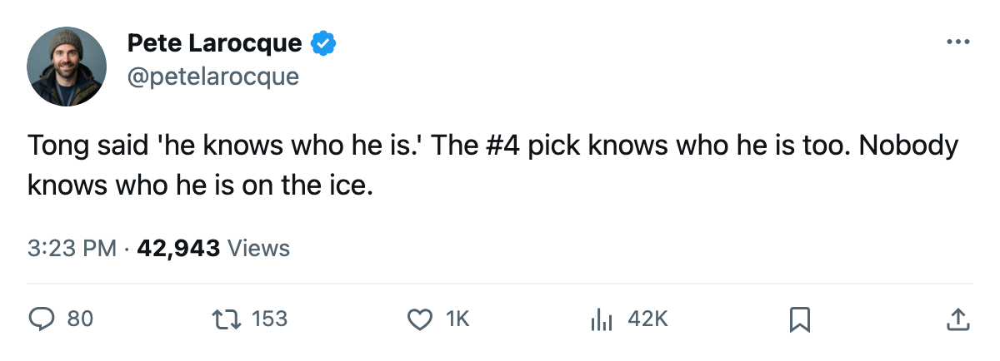
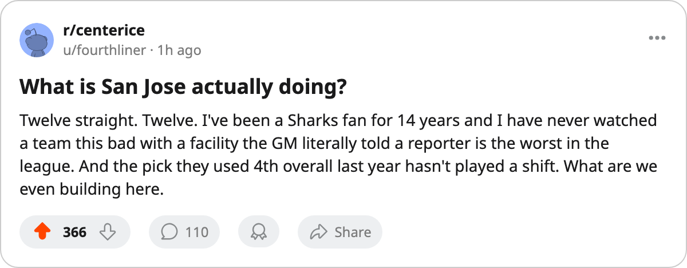

The #4 Pick Has Played 0 Games at the Team Losing 12 Straight. Their GM Won't Name Him.
San Jose sits last in the league at 32 points. Their first-round pick from 2005 hasn't skated a shift. The GM told The Tunnel the rebuild window is open and he won't put the kid's name on a broadcast.
 Pete LarocqueScouting editor · The Prospect File
Pete LarocqueScouting editor · The Prospect File
Jason Allen64 was the 4th pick of the 2005 draft. He is 20 years old, graded at a 72 potential in the Bureau's Book, and has played 0 games for  San Jose Sharks this season. His status on the roster sheet reads scratched.
San Jose Sharks this season. His status on the roster sheet reads scratched.
San Jose enters the week at 32 points in 40 games, dead last in the league by one point over  Florida Panthers and
Florida Panthers and  Washington Capitals. The streak reads L12. They have lost 20 of 40, with 8 overtime losses alongside 11 wins and 20 regulation defeats. The goal differential sits at -25, tied with
Washington Capitals. The streak reads L12. They have lost 20 of 40, with 8 overtime losses alongside 11 wins and 20 regulation defeats. The goal differential sits at -25, tied with  Phoenix Coyotes for the worst in the league.
Phoenix Coyotes for the worst in the league.

Jules Tong sat for The Tunnel's Jan Kowalczyk after another loss on January 5 and was asked about a young player on the roster. He refused.
"I won't do that to a young man. Not now, not with us on eleven straight and every word he says after gets turned into something else," Tong said. He added: "He knows who he is. The coaching staff knows who he is. I know who he is. That's enough for now."
Tong did not name the player. The desk is not naming him either, but the facts on the sheet are these: the 4th overall selection of the 2005 draft sits at San Jose with zero games played, a 64 overall grade, and a 72 potential the Bureau still thinks he can reach.
The rebuild window Tong described
Tong told Kowalczyk a larger picture on the record: "Every rebuild I've been around, and I've been around a few, there's a window where you hand the keys to a young guy before he's ready and he either drives it or he doesn't. We're in that window."
That is the question the 2005 draft class asks across the league, and San Jose has it the worst. The #1 pick from that class, Juha Albelin56, is at  Montreal Canadiens with 9 games played and 0 points. The #4 is at San Jose with 0 games. The #8, Petr Beier, remains unsigned. Three of the top ten picks in the 2005 draft have produced nothing at the league level.
Montreal Canadiens with 9 games played and 0 points. The #4 is at San Jose with 0 games. The #8, Petr Beier, remains unsigned. Three of the top ten picks in the 2005 draft have produced nothing at the league level.
What the Bureau sees in Allen
The Book gives Allen a 64 overall and a 72 potential. The Development Index sits at 0; there is no game tape to grade. The 72 potential means the Bureau thinks he can reach a 72 overall with time and development, but the gap between 64 and 72 is 8 points of overall, and you build those points with ice time.
Allen is not the only 2005 first-rounder parked at the bottom of the standings. Sebastian Akerstrom63, pick 9, sits scratched at  Columbus Blue Jackets with a 50 potential. The 2005 class has produced one clear breakthrough (Josh Sim73 at
Columbus Blue Jackets with a 50 potential. The 2005 class has produced one clear breakthrough (Josh Sim73 at  New Jersey Devils, 15 points from pick 119) and a wall of scratches at the front end.
New Jersey Devils, 15 points from pick 119) and a wall of scratches at the front end.
The draft is 151 days away
San Jose holds its own first-round pick and 5 total selections. If they finish last, they hold the first overall in June. The Junior Bureau's top prospect for 2006 is Toni Kuki, a left wing born in 1986 with a 99 potential. His lowest attribute grade is a 50 in checking. The second is Björn Lieder, a goaltender with a 97 potential and a floor of 68.
San Jose Sharks will have the chance to take either. The question Tong hinted at on The Tunnel, without saying the name, is whether that pick fills a window the #4 overall from a year ago was supposed to fill.
"The plan is a roster that can win forty games. That kid is part of it," Tong said. "I'm not going to rush it by putting his name on your broadcast."
San Jose has 42 games left in the regular season. Allen's 0 in the games-played column has 42 chances to become 1.

